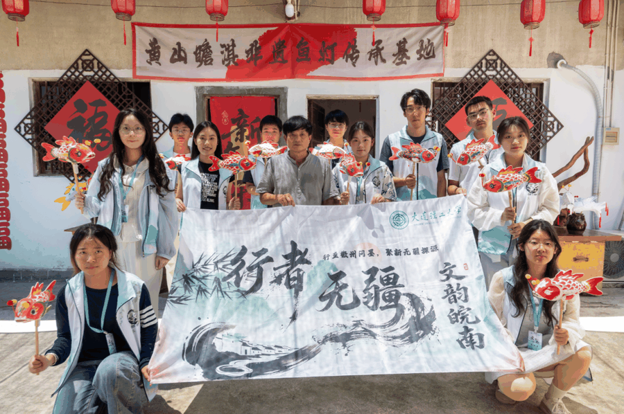
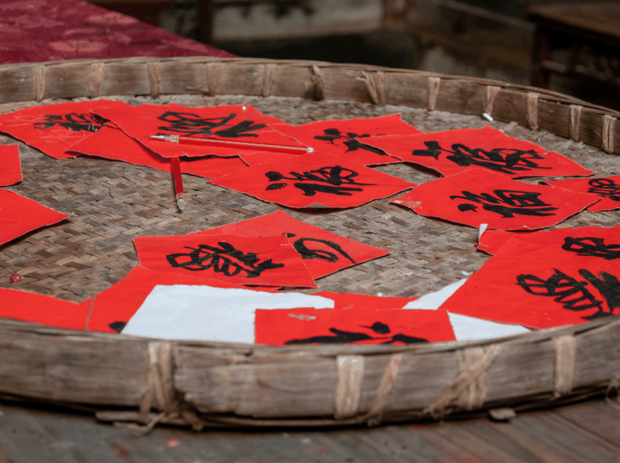
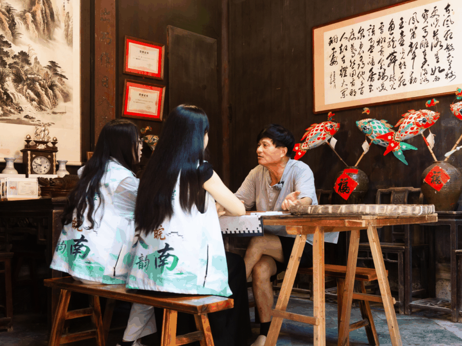
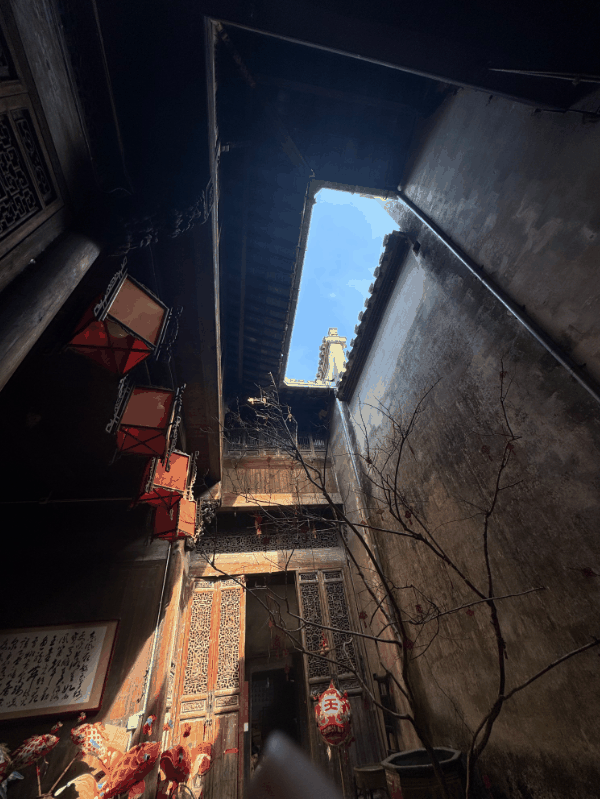
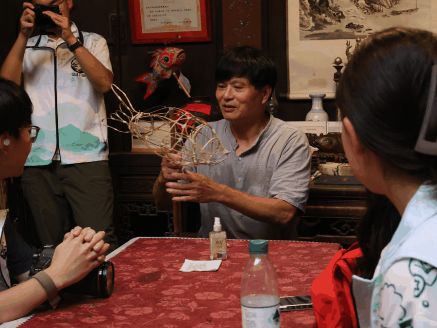
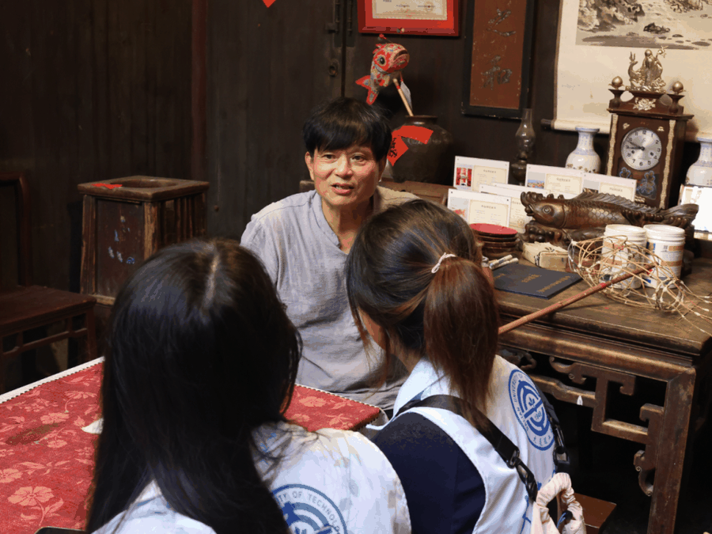
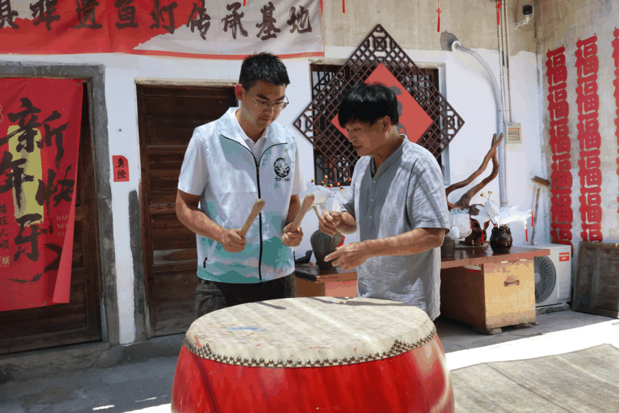
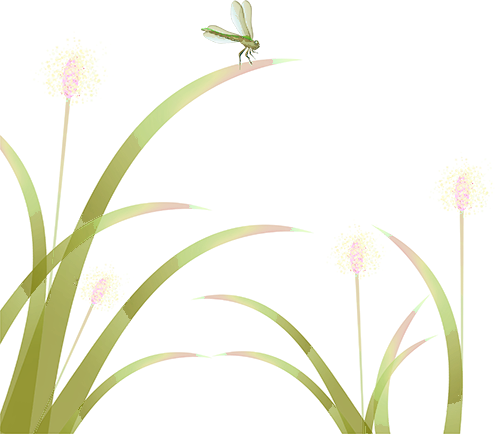

【行者无疆·文韵皖南】行者寻灯，篾扎游鱼载岁华
褪去文房笔墨的清雅，行者无疆实践团走入烟火氤氲的瞻淇古村，告别宣纸与徽笔的书卷气韵，我们邂逅扎根乡土的鲜活非遗——瞻淇鱼灯。在白墙黛瓦的街巷之间，溯源鱼灯沿革、研习锣鼓节拍，跟随匠人编织灯架、裱糊彩衣，触摸藏在古村烟火里生生不息的民俗文脉。
古村承灯史，匠者叙初心

穿行瞻淇错落的老宅巷道，斑驳墙体沉淀着村落数百年记忆，而鱼灯，便是这片土地最热闹温情的文化符号。我们见到瞻淇鱼灯非遗传承人汪近午老师，围坐于农家小院，静静聆听鱼灯的前世今生。古时村民以鱼灯巡游祈福，借“鱼”谐音“余”，祈盼年年有余、村落安康，逢年过节，满村游动的彩鱼灯串联成星河，锣鼓喧天响彻街巷，是代代瞻淇人刻在骨子里的年味与乡愁。



汪近午老师娓娓诉说坚守的历程，从祖辈传承的简易竹篾鱼灯，到不断改良造型、色彩的新式花灯，他守着小院作坊数十年，不愿让热闹的村俗淹没在时光里。除了鱼灯制作，老师还为我们演示配套鱼灯巡游的传统锣鼓敲法，鼓点疏密交错，锣声高低呼应，快慢顿挫都有章法，急促时如溪水奔涧，舒缓时似晚风拂巷，一敲一落，都是古村独有的韵律。简单的锣鼓节奏，我们反复揣摩练习，才发觉看似随性的敲打，藏着民俗传承里严苛的规矩。



竹篾缠鱼影，亲手制花灯

最让人期待的，便是亲手体验鱼灯制作。一根根柔韧竹篾，在汪老师示范下弯折、缠绕、捆扎，勾勒出鱼身、鱼尾、鱼鳍的轮廓，骨架成型，才完成一盏鱼灯的根基。看似轻巧的篾条，握在手中却格外执拗，弯折力度把控稍有偏差，鱼身线条便会歪斜走形，捆扎结点不够牢固，整个灯架都容易松散。
上下滑动查看更多


素白的竹架慢慢披上斑斓外衣，呆板的骨架化作灵动游鱼。看着亲手完成的小鱼灯捧在掌心，鲜亮色彩映着古村灰瓦，满心都是难以言说的成就感，薄薄灯纸之间，裹着乡土民俗的温度，也盛着我们实践途中难得的沉浸式感悟。
灯影承烟火，青年续乡韵
一日瞻淇之行，让我们跳出馆藏文物、文房雅器的非遗印象，看见扎根乡村、伴着烟火成长的民俗非遗。宣纸承载文人笔墨，石雕镌刻山河岁月，而瞻淇鱼灯，盛满寻常百姓的美好期许，锣鼓声响，维系着整个村落的集体记忆。
汪近午老师以半生坚守，留住古村灯火，让快要淡出生活的老习俗重新焕发生机。我们亲手编织的不只是一盏鱼灯，更是和乡土非遗的一次深度相拥。步履走过徽州山水，从博物馆到工坊，从城池古艺到村落民俗，我们愈发懂得，非遗从来不是尘封的过往，它可以是纸上墨韵，可以是石上刀痕，也可以是古村夜里游动的点点鱼光。


以青春步履捡拾徽州遗韵，以满心热忱守护人间匠心，让古老鱼灯的光亮，在新时代里，继续悠然游弋。
素白的竹架慢慢披上斑斓外衣，呆板的骨架化作灵动游鱼。看着亲手完成的小鱼灯捧在掌心，鲜亮色彩映着古村灰瓦，满心都是难以言说的成就感，薄薄灯纸之间，裹着乡土民俗的温度，也盛着我们实践途中难得的沉浸式感悟。

古村灯韵，篾艺流年
古村藏晚韵，彩鱼栖黛墙
一缕灯影，牵起世代乡土念想
锣鼓起落间，撞响山野绵长回响
竹篾绕指尖，把岁月匠心细细编藏
少年入巷，赴一场流淌百年的村落浪漫
点击抽取祝福
行者无疆
来源 | 行者无疆实践团
图片 | 行者无疆实践团
文字 | 童思嘉
编辑 | 原羽佳 袁 婵 童思嘉
审核 | 闫 磊
责编 | 邹靓靓 周 亮